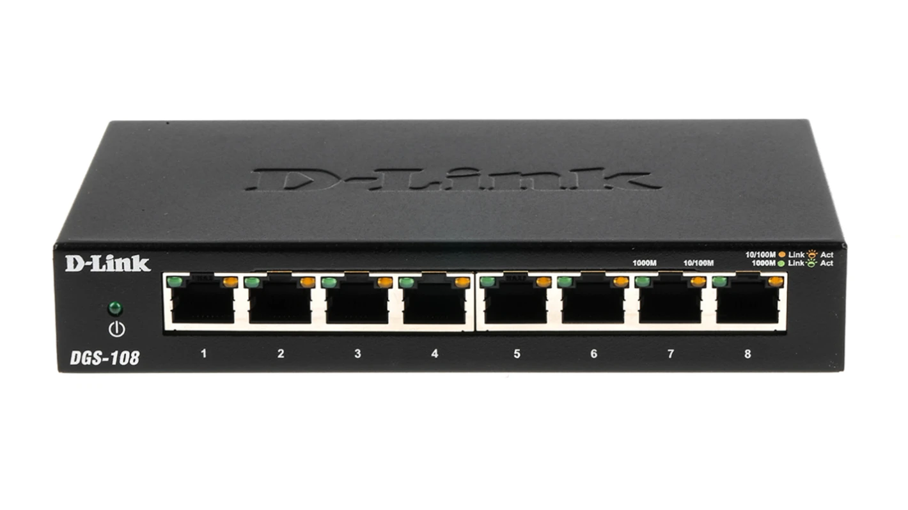
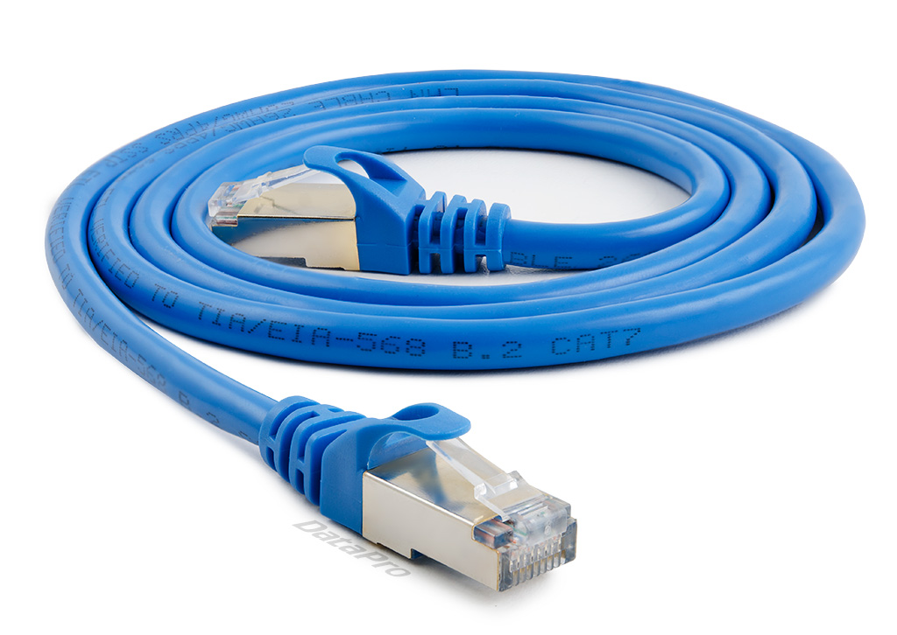

Las piezas del puzle: Hardware de red.
Para montar vuestra red en el simulador, primero debéis conocer a los elementos que forman una red informática. Estos son los dispositivos que permiten que los datos viajen de un sitio a otro:
- El Router (La puerta al mundo): Es el dispositivo más importante. Su función es conectar nuestra red local con el exterior (Internet). Él decide qué camino deben seguir los datos.
- El Switch: Se usa para conectar muchos dispositivos por cable en una misma red local (como sucede en nuestra aula de informática). Es el encargado de que la información llegue al equipo correcto dentro de la misma estancia.

- Punto de Acceso (Wi-Fi): Es el que lanza la señal inalámbrica. Recibe la conexión por cable y la convierte en ondas para que os conectéis con dispositivos móviles como el smartphone o la tablet.

- Cables Ethernet:Aunque a veces no los vemos, son los que garantizan la máxima velocidad y estabilidad en la comunicación alámbrica, evitando interferencias

¿Cómo se entienden estos dispositivos?
Para que estos aparatos hablen entre sí, utilizan un lenguaje común llamado protocolo. Durante las simulaciones de esta Situación de Aprendizaje, configuraremos las "matrículas" de cada equipo, conocidas como direcciones IP, para que puedan identificarse y comunicarse correctamente dentro de la red.

- Punto de Acceso (Wi-Fi): Es el que lanza la señal inalámbrica. Recibe la conexión por cable y la convierte en ondas para que os conectéis con el móvil o la tablet.
- Cables Ethernet (Las autopistas): Aunque a veces no los vemos, son los que garantizan la máxima velocidad y estabilidad sin interferencias.
¿Cómo se entienden estos dispositivos?
Para que estos aparatos hablen entre sí, utilizan un lenguaje común llamado Protocolo TCP/IP. Durante las simulaciones, configuraremos las "matrículas" de cada equipo (direcciones IP) para que puedan identificarse en la red.
Relaciona
Relaciona cada tarjeta con su pareja.
Relaciona cada tarjeta con su pareja.
","showMinimize":false,"itinerary":{"showClue":false,"clueGame":"","percentageClue":40,"showCodeAccess":false,"codeAccess":"","messageCodeAccess":""},"cardsGame":[{"url":"","x":0,"y":0,"author":"","alt":"","audio":"","color":"#000000","backcolor":"#ffffff","eText":"Router%20(definici%C3%B3n)","urlBk":"","xBk":0,"yBk":0,"authorBk":"","altBk":"","audioBk":"","colorBk":"#000000","backcolorBk":"#ffffff","eTextBk":"Conecta%20la%20red%20local%20con%20Internet."},{"url":"","x":0,"y":0,"author":"","alt":"","audio":"","color":"#000000","backcolor":"#ffffff","eText":"Switch%20(definici%C3%B3n)","urlBk":"","xBk":0,"yBk":0,"authorBk":"","altBk":"","audioBk":"","colorBk":"#000000","backcolorBk":"#ffffff","eTextBk":"Conecta%20varios%20equipos%20por%20cable%20en%20una%20misma%20sala."},{"url":"","x":0,"y":0,"author":"","alt":"","audio":"","color":"#000000","backcolor":"#ffffff","eText":"Punto%20de%20acceso%20(definici%C3%B3n)","urlBk":"","xBk":0,"yBk":0,"authorBk":"","altBk":"","audioBk":"","colorBk":"#000000","backcolorBk":"#ffffff","eTextBk":"Emite%20la%20se%C3%B1al%20Wi-Fi%20para%20dispositivos%20m%C3%B3viles."},{"url":"","x":0,"y":0,"author":"","alt":"","audio":"","color":"#000000","backcolor":"#ffffff","eText":"Cable%20Ethernet%20(definici%C3%B3n)","urlBk":"","xBk":0,"yBk":0,"authorBk":"","altBk":"","audioBk":"","colorBk":"#000000","backcolorBk":"#ffffff","eTextBk":"Canal%20f%C3%ADsico%20que%20ofrece%20m%C3%A1xima%20velocidad%20y%20estabilidad."},{"url":"","x":0,"y":0,"author":"","alt":"","audio":"","color":"#000000","backcolor":"#ffffff","eText":"Cable%20Ethernet%20(imagen)","urlBk":"../content/resources/cat6-500mhz-utp-ethernet-lan-network-cable-3-feet-black-nid0011009.webp","xBk":0,"yBk":0,"authorBk":"","altBk":"","audioBk":"","colorBk":"#000000","backcolorBk":"#ffffff","eTextBk":""},{"url":"","x":0,"y":0,"author":"","alt":"","audio":"","color":"#000000","backcolor":"#ffffff","eText":"Router%20(imagen)","urlBk":"../content/resources/router2.jpg","xBk":0,"yBk":0,"authorBk":"","altBk":"","audioBk":"","colorBk":"#000000","backcolorBk":"#ffffff","eTextBk":""},{"url":"","x":0,"y":0,"author":"","alt":"","audio":"","color":"#000000","backcolor":"#ffffff","eText":"Switch%20(imagen)","urlBk":"../content/resources/switch2.webp","xBk":0,"yBk":0,"authorBk":"","altBk":"","audioBk":"","colorBk":"#000000","backcolorBk":"#ffffff","eTextBk":""},{"url":"","x":0,"y":0,"author":"","alt":"","audio":"","color":"#000000","backcolor":"#ffffff","eText":"Punto%20de%20acceso%20inal%C3%A1mbrico%20(imagen)","urlBk":"../content/resources/punto de acceso 2.jpg","xBk":0,"yBk":0,"authorBk":"","altBk":"","audioBk":"","colorBk":"#000000","backcolorBk":"#ffffff","eTextBk":""}],"isScorm":0,"textButtonScorm":"Guardar la puntuación","repeatActivity":true,"weighted":100,"textAfter":"","version":2,"percentajeCards":100,"type":0,"showSolution":true,"timeShowSolution":3,"time":3,"evaluation":false,"evaluationID":"53fbd59b-f83e-4f28-a584-ed1b5d3a4c7d","id":"idevice-1775859228874-i9z4l1opw","msgs":{"msgSubmit":"Enviar","msgClue":"¡Genial! La pista es:","msgCodeAccess":"Código de acceso","msgPlayStart":"Pulsa aquí para jugar","msgScore":"Puntuación","msgErrors":"Errores","msgHits":"Aciertos","msgMinimize":"Minimizar","msgMaximize":"Maximizar","msgFullScreen":"Pantalla Completa","msgExitFullScreen":"Salir del modo pantalla completa","msgNoImage":"Pregunta sin imágenes","msgEndGameScore":"Comience la partida antes de guardar la puntuación.","msgScoreScorm":"La puntuación no se puede guardar porque esta página no forma parte de un paquete SCORM.","msgOnlySaveScore":"¡Solo puede guardar la puntuación una vez!","msgOnlySave":"Solo puede guardar una vez","msgInformation":"Información","msgYouScore":"Su puntuación","msgAuthor":"Autoría","msgOnlySaveAuto":"Su puntuación se guardará después de cada pregunta. Solo puede jugar una vez.","msgSaveAuto":"Su puntuación se guardará automáticamente después de cada pregunta.","msgSeveralScore":"Puede guardar la puntuación tantas veces como quiera","msgYouLastScore":"La última puntuación guardada es","msgActityComply":"Ya ha realizado esta actividad.","msgPlaySeveralTimes":"Puede realizar esta actividad cuantas veces quiera","msgClose":"Cerrar","msgAudio":"Audio","msgNumQuestions":"Número de tarjetas","msgTryAgain":"Necesitas al menos %s% de respuestas correctas para obtener la información. Inténtalo de nuevo.","msgEndGameM":"Has completado el juego. Tu puntuación es %s.","msgUncompletedActivity":"Actividad no completada","msgSuccessfulActivity":"Actividad superada. Puntuación: %s","msgUnsuccessfulActivity":"Actividad no superada. Puntuación: %s","msgTypeGame":"Relaciona","msgCheck":"Comprobar","msgRestart":"Reiniciar"}}{kind=link}
{kind=link}
{kind=link}
{kind=link}
¿Cómo se conecta todo? El orden lógico
Para que un ordenador tenga conexión en nuestra aula, no basta con "enchufar y listo". Debemos seguir un orden lógico para asegurar que la señal llega desde el exterior hasta nuestro equipo:
- Conexión física del equipo: Primero conectamos el cable Ethernet al puerto de nuestra torre o portátil.
- Unión con la red local: En el otro extremo del cable debe ir al Switch, que es el punto donde se concentran todos los equipos del aula.
- Enlace al Router: El Switch debe estar conectado al Router. Si este paso falla, tendremos red en el aula, pero no tendremos Internet.
- Configuración lógica (Software): Una vez que los cables están puestos, el Sistema Operativo necesita una dirección IP para identificarse y poder navegar.
¡Fíjate bien en este orden! Lo necesitarás para resolver el siguiente reto.
Actividad: ¿Cómo montamos la red local?
¡Es hora de ponerse manos a la obra! Imagina que acabas de recibir los equipos. Ordena los siguientes pasos de primero a último para conectar un ordenador de nuestra aula a la red e Internet. Solo tienes que arrastrar los bloques para moverlos.
- Conectar el cable Ethernet a la tarjeta de red del ordenador.
- Conectar el otro extremo del cable a un puerto libre del Switch.
- Comprobar que el Switch está unido al Router mediante el cable de enlace.
- Configurar la dirección IP y la máscara de subred en el Sistema Operativo.